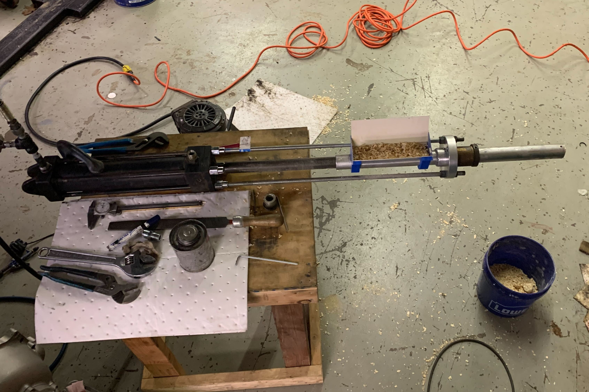
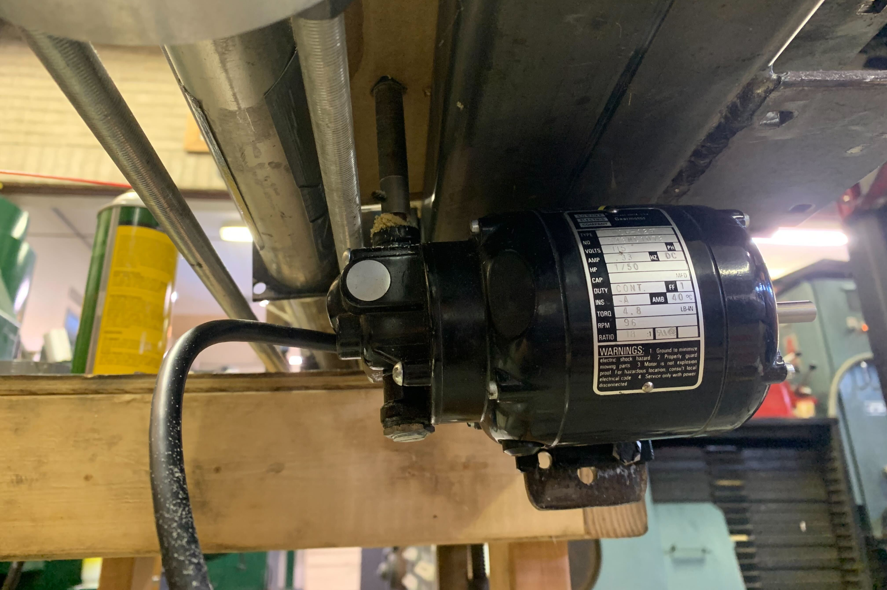
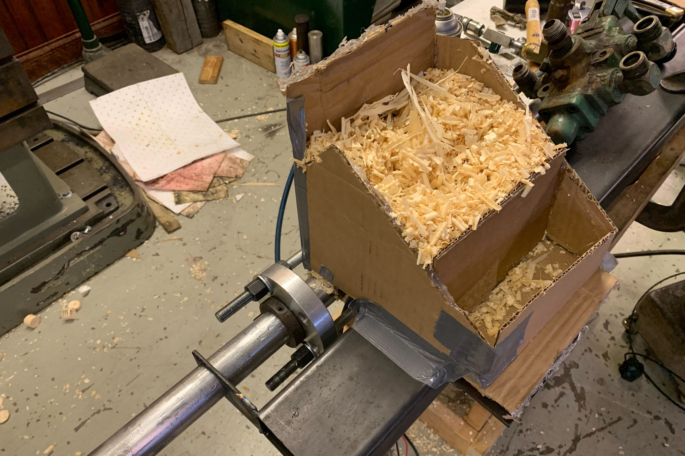
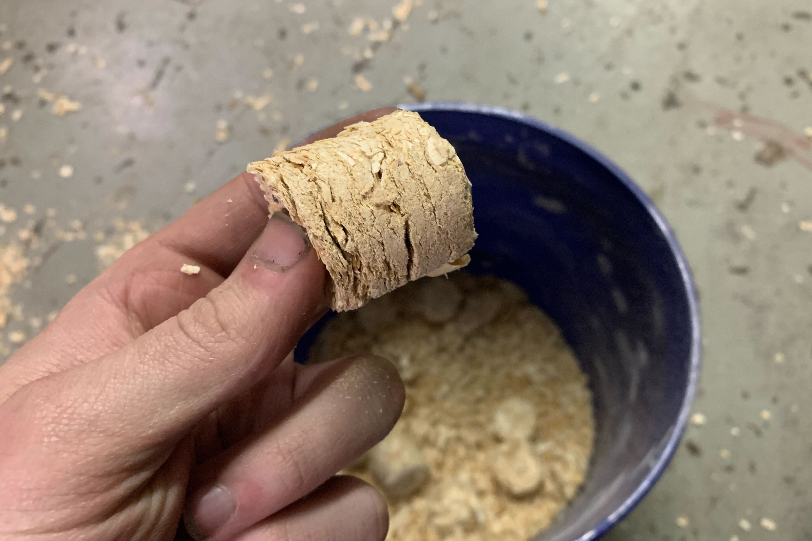
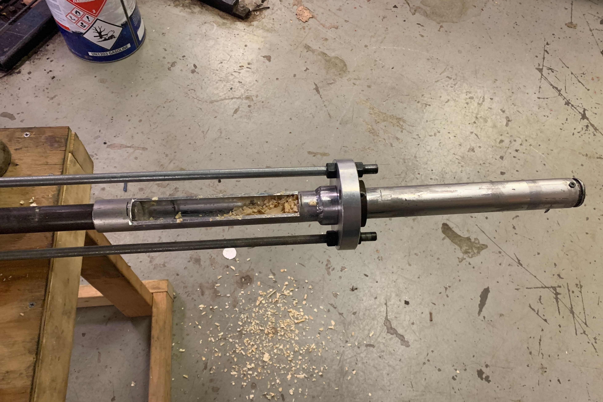

Sawdust Pellet Press
Compressing sawdust into compact pellets that can be easily burned

During my winter break from school, I tried to build a pellet press that would compress sawdust into pucks. It basically consisted of a hydraulic ram we had laying around, pushing a piston in a long bore. Sawdust would be compressed in the bore, and make its way to the end. However, as the sawdust was compressed, it tried to expand radially as well, pressing against the inside of the bore. This pressure created more friction, which led the ram to pack the sawdust even tighter, which led to more wall-pressure, more friction, and more compaction. In this way, while the machine would initially just shove dust out the end, eventually it would run away and start producing denser and denser pellets. I believe that the reason this didn't continue until the machine stalled was that the effective Poisson ratio of the sawdust would fall as it got denser, until eventually the Poisson ratio was low enough that a given amount of additional compressive force didn't generate more than that amount of wall drag. Nonetheless, balancing the various factors in the system to prevent the jamming was still a challenge, since under the wrong circumstances it would happily stall the hydralic ram (which is impressive)
The ram was being powered by a reverable 5ksi portable hydraulic power unit. I connected a pressure transducer to the hydraulic line and made a quick circuit with an arduino that would automatically reverse the cylinder once the pressure exceeded a certain threshold, assuming that the cylinder had reached it's end of travel and the pump had dead-headed (still with it's internal relief valve, of course).
The press was extremely crude, of course, being made of whatever scrap and random components we had laying around. Eventually my questionable aluminum weld on the bore broke, so the compression bore was no longer held back to the ram. That ended the project, as I had very little time left in my break. We got some heavy steel tubing that we can use for a second version when I get around to it.

I added a gearmotor driving a hopper agitator made from some bent heavy-gauge steel wire.

The sawdust hopper design that I mocked up that worked okay.

A sawdust pellet as-formed. Note the tendency to delaminate in planes normal to the extrusion direction

The working end of the press, with the cut open portion of the tube visible where sawdust enters the system.